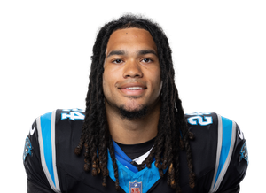

BALL KEEP
Dynasty · Redraft · Ball
Player File · RB CAR

Jonathon Brooks
RB · CAR · 23 · Texas
Cold #10
Keep avg121.0
# Boards2
BK Value686
Spread98–144
The Keep#122BK 686
The Board#122BK 686
Plus
- Young running back; if the knees hold, Carolina still needs a lead back and the talent was real pre-injury.
- Low-mileage when healthy is the dynasty lottery ticket.
Minus
- Cold: FantasyPros — two ACLs in 13 months, still unproven, market near RB26.
- Two ACLs is not a 'buy the dip' unless the dip is free.
- Cold #10: FantasyPros: two ACLs in 13 months, still unproven, market near RB26. — FantasyPros
Every Board
Spread 98–144 · 2 sources
| Source | Rank |
|---|---|
| ESPN (Karabell) | 98 |
| PFN (Katz/Soppe) | 144 |
Tape · 2025 season
Carolina Panthers RB Jonathon Brooks make triumphant return after missing 2025 with ACL | USN
On The Keep nearby — Bryce Young (#120) · Jayden Reed (#121) · Khalil Shakir (#123) · Kenny Gainwell (#124)